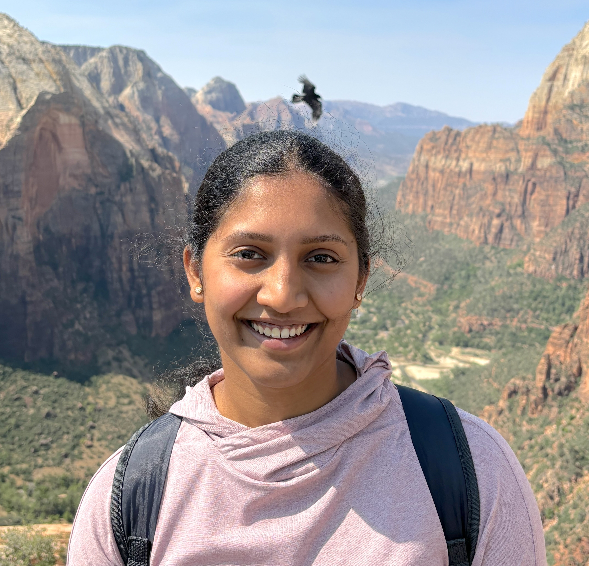
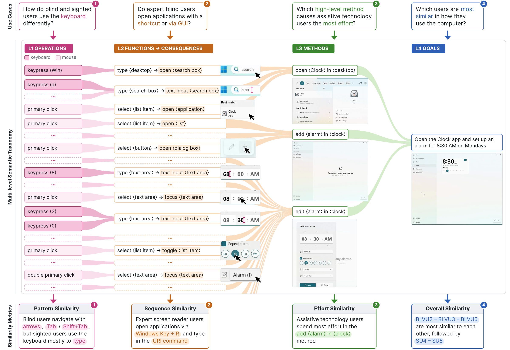
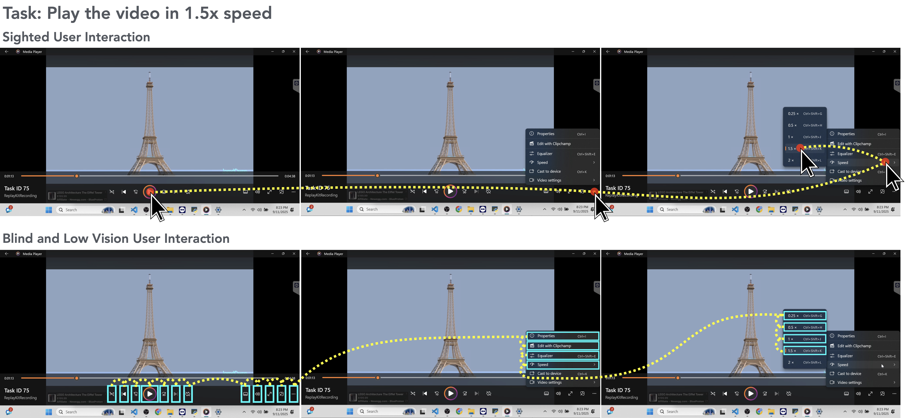
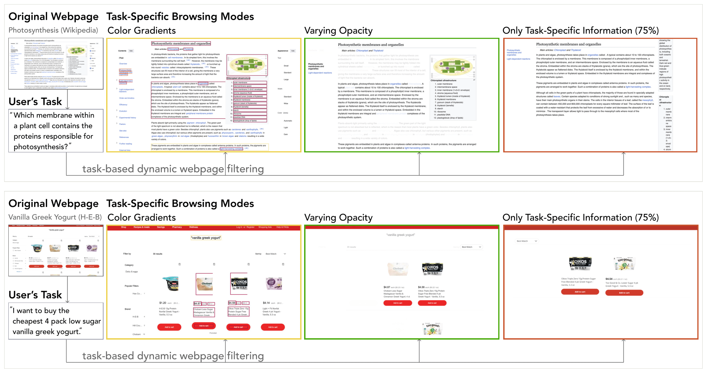
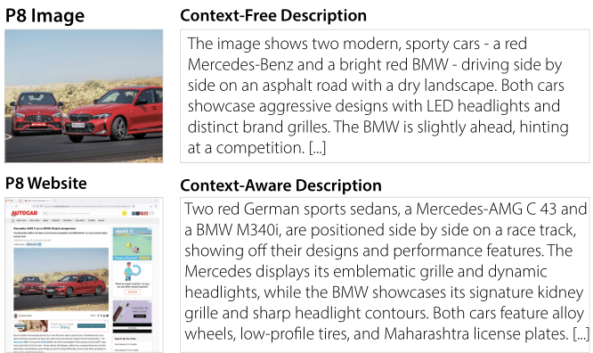

Ananya G M
I am a 3rd year PhD student advised by Dr. Amy Pavel at the Department of EECS at UC Berkeley. My research focuses on designing accessible computer use to improve human-AI collaboration. I study how computer use varies across users using interaction traces to inform designs for task-aware interfaces and to bridge accessibility gaps. I test these interfaces with AI agents that simulate user behavior.
I received my Master's in Human-Computer Interaction from the School of Information at UT Austin and Bachelor's in Information Science and Engineering from RV College of Engineering, Bengaluru.

Research
* indicates equal contribution, † indicates equal supervision
-

Comparing Computer Use Behavior Across Multiple Levels of Abstraction
Under Review -

A11y-CUA Dataset: Characterizing the Accessibility Gap in Computer Use Agents
CHI 2026 -

Task Mode: Dynamic Filtering for Task-Specific Web Navigation using LLMs
ASSETS 2025 -
